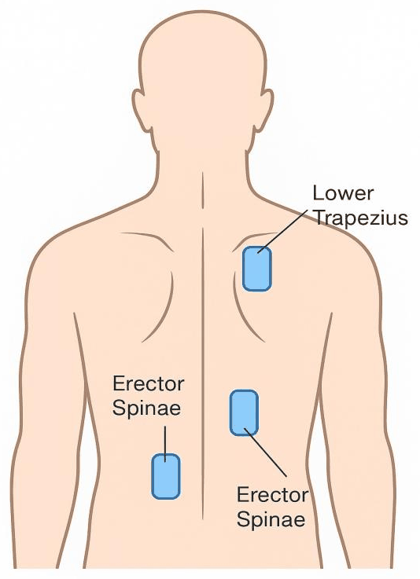
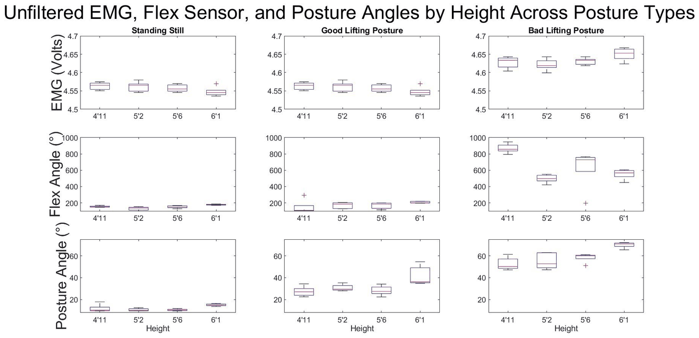

EngineeringBiomedical Engineering Laboratory, USF · Course project
Wearable Device for Real-Time Lifting Posture Correction
A wearable that reads back-muscle activity, spine bend and trunk angle, and vibrates the moment a lift turns unsafe, so the wearer can fix their form before it leads to an injury.
01Overview
Lifting injuries are one of the most common causes of back pain, at work and in everyday life. Lifting with a rounded back puts extra strain on the spine and the muscles of the lower back, and most people get no warning that their form has slipped until something hurts.
EMG measures the electrical activity of muscles, which shows how hard they are working. IMUs and flex sensors track posture and how the body is oriented. Put together in something wearable, they can catch a bad lift while it is happening.
02Objective
Build a low-cost wearable that detects improper lifting posture from muscle activity and back angle, and alerts the wearer with a vibration in real time.
Our hypothesis: if EMG and IMU data can pick out an improper lift, and the wearer feels a vibration right away, they will be alerted early enough to correct their posture and avoid an injury.
03My contribution
- Designed and prototyped the wearable, combining EMG, IMU and flex sensors with an Arduino.
- Developed the test protocols and validated the prototype across more than 45 lifting trials.
- Built a MATLAB classification pipeline that sorts safe lifts from unsafe ones.
- Analyzed the results to guide design changes between prototype iterations.
04Design process
The device has three jobs: sense the lift, decide whether it is safe, and tell the wearer right away. Sensors on the back feed an Arduino, which checks the readings against limits for a safe lift and switches on a vibration motor when the form breaks down. Scroll through one session below.
-
01 · Sense
Reading the back
EMG electrodes over the lower back muscles show how hard they are working, a flex sensor along the spine shows how much it bends, and an IMU shows the angle of the trunk. An Arduino on the belt reads all three.
-
02 · Detect
Catching an unsafe lift
Bending at the waist rounds the back. The flex and trunk-angle signals cross their limits, the Arduino flags the lift as unsafe, and the motor vibrates right away, so the wearer straightens up.
-
03 · Correct
Lifting with good form
Squatting with a straight back keeps every signal under its limit, so the lift goes through without an alert.
-
04 · Classify
Sorting the trials
The recorded trials went through a MATLAB classification pipeline that sorted safe lifts from unsafe ones. It was right more than 90% of the time across 45+ trials.



05Testing & validation
We tested the device on wearers of different heights in three conditions: standing still, lifting with good form and lifting with bad form. Every trial recorded muscle activity, spine bend and trunk angle. We also compared the raw EMG with a high-pass filtered version, which strips out slow drift in the signal.
Bad lifts stood out in all three signals, most clearly in the flex and posture angles, which is what lets the device tell a safe lift from an unsafe one.

06Results
The wearable caught unsafe lifts from muscle activity and back angle, and its vibration let wearers correct their form on the spot. We presented the project as a poster at the USF Biomedical Engineering Laboratory showcase in 2025.
Next steps
- Make it smaller and longer-lasting, with battery optimization and smaller hardware.
- Personalize the feedback, adding visual and audio alerts alongside vibration.
- Connect it to physical therapy and workplace health programs.
07Key takeaways
- Feedback has to come during the lift. A cue in the moment is what lets someone change their form; a report afterward doesn't.
- No single sensor tells the whole story. Muscle activity shows effort and the flex sensor and IMU show form, so the device uses all three.
- Test on more than one body. The same lift reads differently on people of different heights, so the limits have to hold up across wearers.